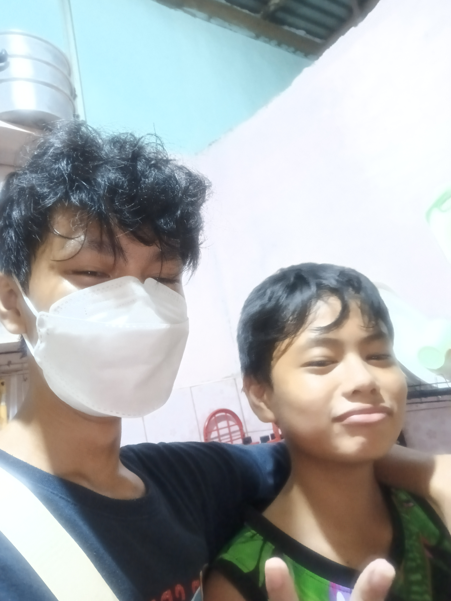

Jasper Because 2024 Is Ending I Decided To Create You A Dedicated Website With Our Favorite Music Let's Enjoy The Silence And Listen To The Music.
Jasper I Just Want To Thank You For All The Things You Did For Me Im Sure You Probably Think That, Its Just "Small" To Me But I Can Assure You I Appreciate Small Thing That Are Given To Me Under A Certain Circumstances, Thank You For Making My 2024 Fun. - Best Regards Arhon
